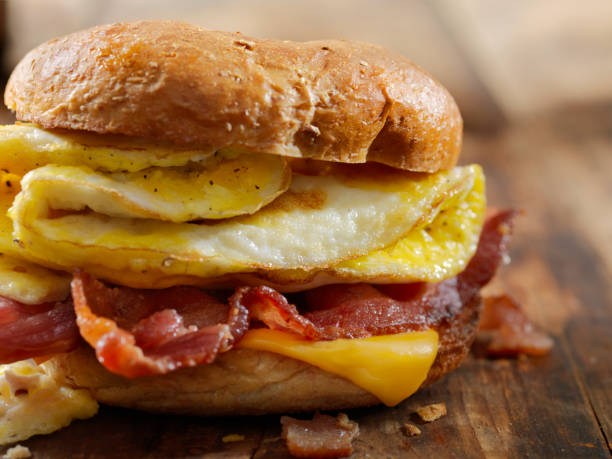

Home
Bacon Egg and Cheese

Description
A true breakfast classic, the bacon, egg, and cheese sandwich is the ultimate morning comfort food.
Crispy, smoky bacon meets fluffy, freshly-cooked eggs and melted cheese, all layered between a buttery toasted roll, bagel, or biscuit.
It's hearty, satisfying, and irresistibly delicious—perfect for starting the day strong or curing midday cravings.
Customize it with your favorite bread or add-ons like avocado or hot sauce to make it your own.
Ingredients
- 4 strips bacon
- 2 Kaiser rolls, sliced in half horizontally
- 4 tablespoons unsalted butter, divided
- 4 large eggs, lightly whisked
- 4 slices American cheese
- ketchup, for serving (optional)
Steps
- Place bacon in a large skillet and cook over medium-high heat, turning occasionally, until crisp, about 10 minutes.
Drain bacon slices on paper towels.
- Melt 2 tablespoons butter in a large nonstick pan or griddle over low heat.
Add Kaiser rolls, cut sides down, and toast until lightly golden, about 3 minutes.
Remove and set aside.
- For each sandwich, melt 1 tablespoon butter in the skillet. Pour half the eggs into the pan, and cook
as if making an omelet, pushing eggs aside and lifting to allow uncooked egg to run underneath.
Layer 1 slice of cheese, 2 slices bacon, and 1 slice cheese onto half of the cooked egg, and fold
the other half over the top. Add this to a toasted Kaiser roll, and wrap the roll in foil to steam.
Repeat with remaining sandwich ingredients.
- Slice in half and serve with ketchup.